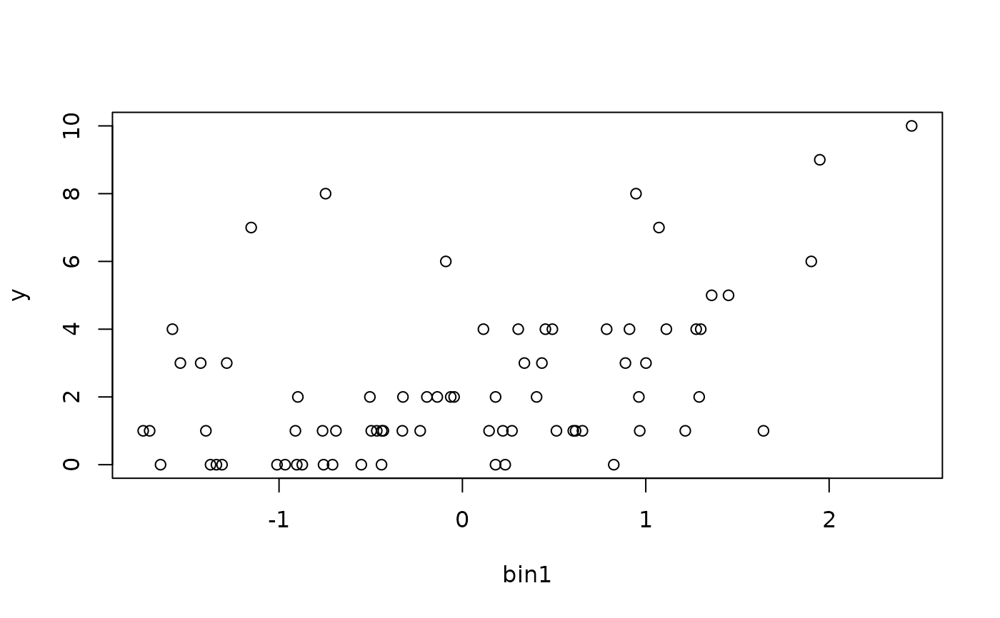
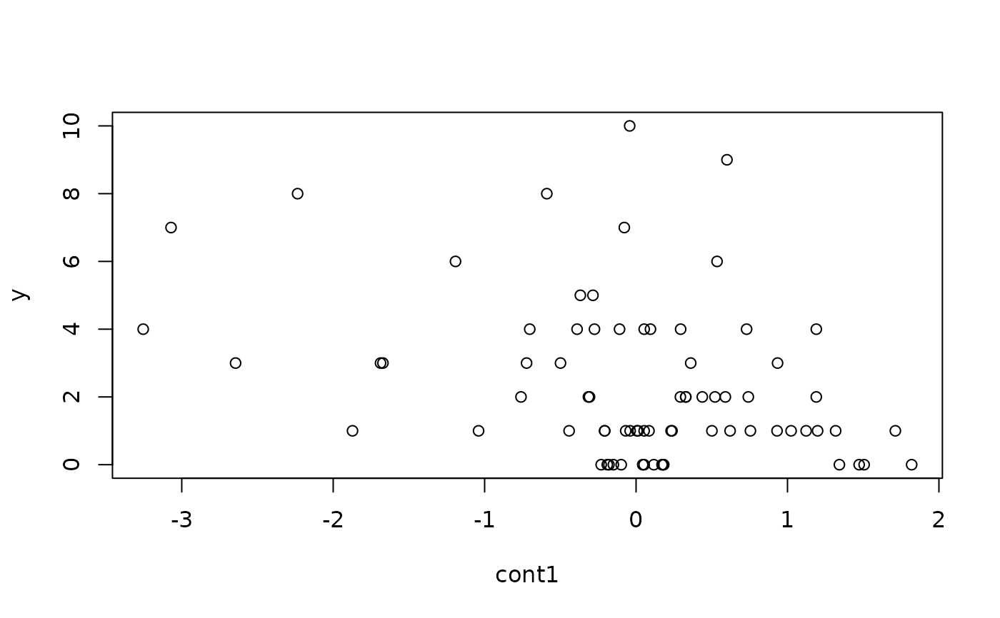

Simulates survey points and a response that depends on
kernel-weighted landscape covariates at scales of effect you choose. Fit
the simulated data with kernel_prep() and multiScale_optim() to check
whether the true scales and coefficients are recovered, or to explore how
sample size and kernel choice affect estimation.
Arguments
- alpha
Numeric scalar. Intercept of the linear predictor, on the link scale of
type(log for counts, logit for occurrence, identity for"gaussian"). Default:1.- beta
Numeric vector of slopes, one per layer of
raster_stackand in the same order, on the link scale. Each slope is the effect of a one standard deviation change in that standardized covariate. Required.- kernel
Character. Kernel used to weight raster values by distance when computing the true covariates:
"gaussian"(default),"exp"(negative exponential),"expow"(exponential power), or"fixed"(fixed-radius buffer). See multiScaleR-kernels.- type
Character. Distribution of the simulated response:
"count"(default): Poisson counts with meanexp(eta)."count_nb": negative binomial counts with meanexp(eta)and size (dispersion)StDev."occ": binary (0 or 1) occurrence with probabilityplogis(eta)."gaussian": normal values with meanetaand standard deviationStDev.
- StDev
Positive numeric scalar. The
size(dispersion) of the negative binomial for"count_nb", where smaller values give more overdispersion, or the residual standard deviation for"gaussian". Unused for"count"and"occ". Default:0.5.- n_points
Either a positive integer number of points to simulate, or a
SpatVectorof points to use directly. An integer places points on a regular square grid over the interior of the raster and samplesn_pointsof them at random (see Details). Default:50.- min_D
Positive numeric scalar. Starting spacing, in map units, of the point grid when
n_pointsis an integer. DefaultNULLuses1.55 * max(sigma). The spacing shrinks until the grid holds at leastn_pointspoints.- raster_stack
A
SpatRasterwhose layers are the landscape variables, such as the output ofsim_rast(). Layer names become the covariate names. Required.- sigma
Positive numeric vector of true scale parameters, in map units, one per layer of
raster_stack. These are the values thatmultiScale_optim()should recover. Required.- shape
Positive numeric vector of true shape parameters, one per layer. Required when
kernel = "expow"and ignored otherwise.- max_D
Positive numeric scalar. Radius, in map units, of the buffer used to compute the true covariates with
kernel_prep(). DefaultNULLuses 1.1 times the line-based (1D) distance holding 99% of the kernel weight atmax(sigma). That is shorter than the planar radius holding 99%, so supply a larger value if you need less truncation. Supply it whenkernel = "expow", because the default cannot be computed for that kernel.- user_seed
Optional integer seed. When supplied,
set.seed()is called with it, which makes the simulation reproducible and also resets the global random number stream. Default:NULL.- ...
Not used.
Value
A named list with three elements:
obs: numeric vector with the simulated response, one value per point.df: data frame with the response in columnyand one column per raster layer. The layer columns hold the true kernel-weighted means, standardized to mean 0 and standard deviation 1. A model fitted to this data frame estimates the coefficients at the true scales.pts: the survey points with anobscolumn holding the response. With an integern_points, ansfPOINT object with the coordinate reference system ofraster_stack(none when the raster has none). Otherwise the supplied points. Pass it tokernel_prep()aspts.
Details
Model. For each point, sim_dat() computes the kernel-weighted mean of
each layer at its true sigma (and shape) with kernel_prep(), and
standardizes it across points. The linear predictor is
eta = alpha + sum(beta * x), where x holds those standardized
covariates, and the response is drawn from the distribution set by type.
Point placement. With an integer n_points, points start as the cell
centers of a regular square grid over a window inset from the raster
edges, which reduces edge effects. The inset is 15% of the raster's
maximum x coordinate on each side, and the same limits are used for x and
y. This assumes a square raster whose extent starts at 0, as produced by
sim_rast(). Rasters with other extents can fail or place points poorly,
so supply your own points through n_points for them. The grid spacing
starts at 97% of min_D and shrinks by 3% at a time until the grid holds
at least n_points points, and then n_points of them are sampled at
random.
Recovering the scales. Prepare pts and the same raster_stack with
kernel_prep(), using a max_D comfortably above the largest true
scale. Fit a starting model to the standardized covariates, run
multiScale_optim(), and compare the estimated sigma values with sigma.
The example below shows these steps.
See also
sim_rast(), sim_dat_unmarked(), kernel_prep(),
multiScale_optim(). vignette("v02-user-guide", package = "multiScaleR") simulates zero-inflated counts with known scales.
Examples
## Four simulated layers. Keep one binary and one continuous layer
rs <- sim_rast(user_seed = 555)
rs <- terra::subset(rs, c("bin1", "cont1"))
## Counts with true scales of 75 m (bin1) and 150 m (cont1)
s_dat <- sim_dat(alpha = 0.5,
beta = c(0.75, -0.75), # log-scale effect per SD
kernel = "gaussian",
sigma = c(75, 150),
type = "count",
n_points = 75,
raster_stack = rs,
max_D = 400,
user_seed = 999)
# Response and the true standardized covariates
head(s_dat$df)
#> y bin1 cont1
#> 1 0 0.2336033 -0.2303627
#> 2 6 1.9025773 0.5348098
#> 3 1 -0.2301021 0.5008651
#> 4 0 -0.9667033 0.1788853
#> 5 3 -1.4272178 -1.6873490
#> 6 4 1.1123820 -0.1091041
# Counts rise with bin1 and fall with cont1
plot(y ~ bin1, data = s_dat$df)

plot(y ~ cont1, data = s_dat$df)

# \donttest{
## Check whether multiScale_optim() recovers the true scales
# max_D well above the largest true scale
kernel_inputs <- kernel_prep(pts = s_dat$pts, raster_stack = rs,
max_D = 750, verbose = FALSE)
mod <- glm(y ~ bin1 + cont1, family = poisson,
data = data.frame(y = s_dat$obs, kernel_inputs$kernel_dat))
fit <- multiScale_optim(fitted_mod = mod, kernel_inputs = kernel_inputs,
verbose = FALSE)
# Compare the sigma estimates with the true 75 and 150 m
summary(fit)
#>
#> Call:
#> multiScale_optim(fitted_mod = mod, kernel_inputs = kernel_inputs,
#> verbose = FALSE)
#>
#>
#> Kernel used:
#> gaussian
#>
#> ***** Optimized Scale of Effect *****
#>
#> Mean SE 2.5% 97.5%
#> bin1 61.2494 13.14700 35.04133 87.45747
#> cont1 150.4171 14.92868 120.65731 180.17688
#>
#>
#> ====================================
#>
#> ***** Optimized Scale of Effect -- Distance *****
#> Scale distances (map units) at 90%, two definitions.
#>
#> 2D, radius of the circle for the ideal untruncated kernel (selected):
#> Mean 2.5% 97.5%
#> bin1 131.44 75.20 187.68
#> cont1 322.79 258.93 386.65
#>
#> 1D, along a line through the point (comparison):
#> Mean 2.5% 97.5%
#> bin1 100.75 57.64 143.85
#> cont1 247.41 198.46 296.36
#>
#>
#> ====================================
#>
#> ***** Fitted Model Summary *****
#>
#>
#> Call:
#> stats::glm(formula = y ~ bin1 + cont1, family = poisson, data = data)
#>
#> Coefficients:
#> Estimate Std. Error z value Pr(>|z|)
#> (Intercept) 0.55167 0.09721 5.675 1.39e-08 ***
#> bin1 0.72448 0.08122 8.920 < 2e-16 ***
#> cont1 -0.63580 0.08268 -7.690 1.48e-14 ***
#> ---
#> Signif. codes: 0 ‘***’ 0.001 ‘**’ 0.01 ‘*’ 0.05 ‘.’ 0.1 ‘ ’ 1
#>
#> (Dispersion parameter for poisson family taken to be 1)
#>
#> Null deviance: 169.110 on 74 degrees of freedom
#> Residual deviance: 69.593 on 72 degrees of freedom
#> AIC: 239.92
#>
#> Number of Fisher Scoring iterations: 5
#>
#>
#>
#> ***** Follow-up recommendation *****
#> Recommended `max_D`: 750
#> Recommended starting `sigma` values:
#> bin1 cont1
#> 61.2494 150.4171
#>
#> Action:
#> Use the optimized parameters as efficient starting values if refitting.
# }